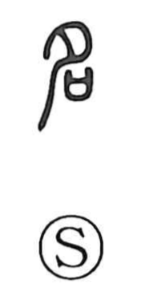

名

Kun: na | On: mei, myo
name ・ to name ・ reputation ・ fame
Explanation
名 combines 夕, here a piece of sacrificial meat, with 口, the ritual container for written prayers. The scene is the naming of a child before the ancestors.
When the child reached three months, the family reported the birth at its ancestral shrine. The offering and prayer accompanied the giving of a name, making the ceremony an admission into the lineage. The name was bestowed within this relationship to the ancestral spirits.
From the personal name come the names of things, their designation in language, and the name corresponding to an actual role or condition. A name known publicly becomes reputation or fame. 名 can also mean recording something in writing. These uses develop the identifying word and the recognition it confers.